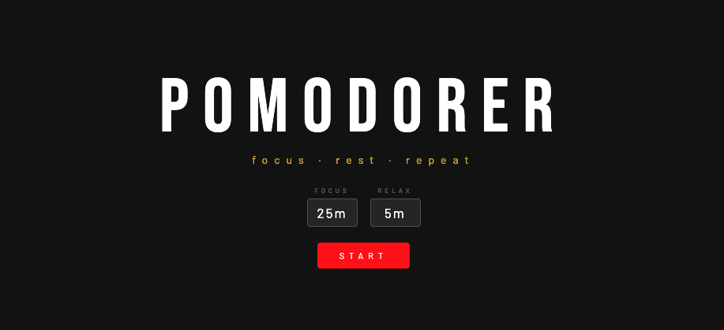
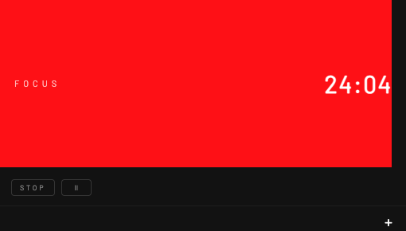
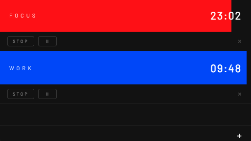
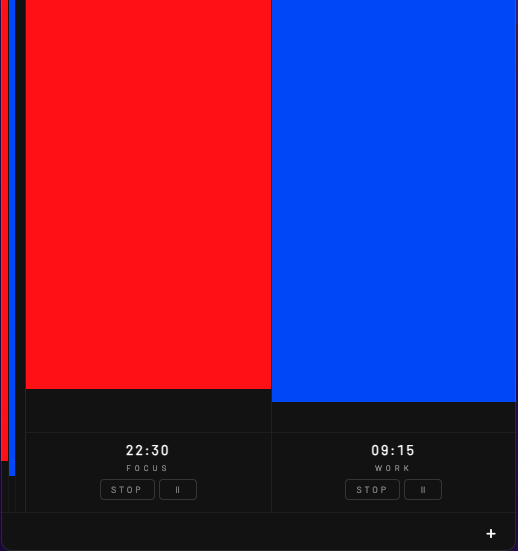

Pomodoro is a focus-timer application designed and built end to end, from interaction model through visual design and front-end implementation. It supports multiple simultaneous timers, each assigned its own color and rhythm, along with a compact mode that collapses the interface into a minimal strip of light for continuous background use.
I designed and built the product as a browser-based web app with no installation required, handling interaction model, visual design and front-end implementation myself.
The project served as a practical exercise in shipping a complete product solo, deepening front-end skills in state management, timer logic and UI consistency.

Home screen: set a focus and a rest interval, press start

A single session running

Multiple sessions at once, each with its own color

Compact mode: a strip of light at the edge of the screen